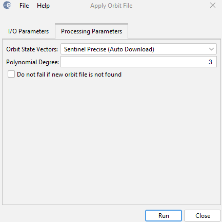

Apply Orbit File Operator
The orbit state vectors provided in the metadata of a SAR product are generally not accurate and can be refined
with the precise orbit files which are available days-to-weeks after the generation of the product.
The orbit file provides accurate satellite position and velocity information. Based on this information, the
orbit state vectors in the abstract metadata of the product are updated.
Orbit Files Supported
The operator supports ASAR, ERS and Sentinel-1 products.
- For Sentinel-1, Restituted orbit files and Preceise orbit
files may be applied. Precise orbits are produced a few weeks after
acquisition. Orbit files are automatically download from the ESA GNSS
Hub.
- For ASAR product, DORIS precise orbit file generated by the Centre de Traitement Doris Poseidon (CTDP)
and Delft University can be applied. It provides the satellite positions and velocities in ECEF
coordinates every 60 seconds.
- For ERS product, DELFT precise orbit file generated by Delft Institute for Earth-Oriented Space Research (DEOS)
can be applied. It provides the satellite ephemeris information (latitude, longitude, height) every 60 seconds.
The operator first converts the satellite position from (latitude, longitude, height) to ECEF coordinates,
then computes the velocity information numerically.
- Also for ERS product, PRARE precise orbit file generated by Delft University can be applied. It provides
the same information every 30 seconds.
Major Processing Steps
To refine the orbit state vectors, the following steps are performed:
- Get the start time of the source product;
- Find orbit file with user specified type and the product start time;
- For each orbit state vector in the metadata, get its UTM time;
- Compute new orbit state vector for the UTM time using interpolation.
Parameters Used
The following parameters are used by the operator:
- Orbit Type: User can select the type of orbit file for the application. The following orbit
file types are supported:
- SENTINEL-1 Restituted
- SENTINEL-1 Precise
- DORIS_VOR
- DORIS_POR
- DELFT_PRECISE_ENVISAT
- DELFT_PRECISE_ERS_1
- DELFT_PRECISE_ERS_2
- PRARE_PRECISE_ERS_1
- PRARE_PRECISE_ERS_2
- Polynomial degree: User can select the polynomial degree for the interpolation.
- Not to fail on missing orbit file: If this option is selected, the operator will not fail if the orbit file
is not found. The operator will continue to process the product with the original orbit state vectors.
